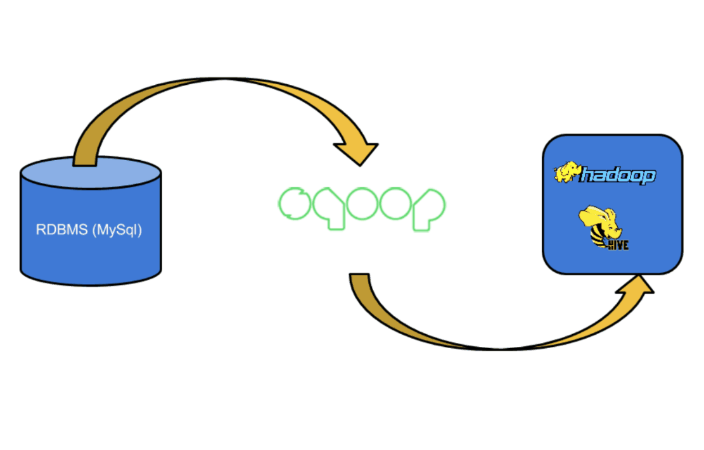

// that data geek
I'm Anirudh Prabhu.
Data Science · Finance · Risk · Analytics aficionado.
01 · about
A data nerd, inspired by tough problems.
I enjoy data-driven storytelling. A few interesting things about me: I love reading (sci-fi and growth books) and chasing sunsets. I'm a very outdoorsy human and an adventure junkie, passionate about poker, tennis, soccer and chess. Above all, I'm a perpetual learner — every day I push myself to learn something new, whether it's machine learning, a new instrument, or miscellaneous facts about the fascinating world we live in.
I graduated in Electronics and Computer Science Engineering (B.S.) and started my career as a Software Consultant for CISCO in 2014. After two years of solving intriguing front-end and back-end problems and working with clients day to day, I pursued my Master's in Information Science and Data Analytics at the University of Texas at Dallas.
Today I problem-solve at Uber Technologies as a Senior Data Scientist, building BI solutions for Fin-tech and Strategic Finance. I've designed time-series models to detect anomalies, helped build statistical models for customer churn and rider/driver lifetime value, and automated reporting with Hive, Spark, Tableau and Python — delivering insights straight to C-level executives.
I aspire to be a leader in Data Science and Analytics.
02 · skills
The toolkit.
Rated the honest way — 1 basic → 5 expert.
- Databases (SQL)5
- Big Data (Hive, Presto, Spark)5
- Data Viz (Tableau, Plotly)5
- Presentation5
- Python4
- Predictive Modeling4
- Statistical Methods4
- R Programming3
- Data Management (Airflow)3
03 · journey
Mumbai → Dallas → San Francisco.
-
Jan 2018 — Present
Senior Data Scientist, Strategic Finance
Uber Technologies Inc. · San Francisco
Leveraging predictive and descriptive analytics to build solutions for Finance. Applying statistics and quantitative reasoning to forecast efficiency, customer retention and rider churn. Generating critical data insights and dashboards for C-level executives.
-
May 2017 — Jan 2018
Risk Data Analyst Intern
Uber Technologies Inc. · San Francisco
Applied a diverse set of statistical, quantitative, rule-based and machine-learning methods to mitigate fraud, reduce user friction on the Uber platform, and produce applicable insights.
-
Aug 2016 — May 2018
M.S. Information Systems
University of Texas at Dallas · GPA 3.7
Coursework: Data Warehousing, Machine Learning, Statistics, Data Management, Data Visualization. Leadership: Writing Tutor, mentoring students on structure in their written work.
-
2014 — 2016
IT Analyst
CISCO · Mumbai, India
Analyzed and resolved front-end and back-end code issues in the CISCO workspace application using PL/SQL and Java.
-
2010 — 2014
B.S. Electronics & Computer Science
University of Mumbai
Coursework: Computer Programming, Differential Equations, Linear Algebra, Calculus, Microcontrollers, Circuit Design.
04 · projects
Learning is fun. It should never stop.
Passion projects and product ideas that keep me growing — find more on GitHub and Tableau Public.

ARIMA Time-Series Modeling
Forecasting customer demand and inventory over a 7-day horizon with ARIMA techniques.
Python · matplotlib · FB Prophet
Customer Lifetime Value — Retail
Predicting 3-month CLV for an online retail firm using regression techniques.
Python · scikit-learn
Predicting IMDB Movie Ratings
Regression and neural networks to predict a future movie's IMDB rating and gross margin.
R · SAS
Analyzing Facebook Ad Campaigns
Feature engineering and visual analysis of CTR, CPC and campaign metrics.
Python · pandas · seaborn
Carpool Buddy System — UT Dallas
Product platform and database design helping students commute to classes and events.
Lucidchart · Erwin
Global Water Scarcity — Tableau Viz
Visualizing the understated global risk of fresh-water scarcity for future populations.
TableauData Analysis with Pandas & Python
Companion code repository for the Packt title — hands-on pandas techniques for real-world data analysis.
Python · pandas · PacktData Science Projects
An evolving collection of smaller data science experiments, scripts, and explorations.
Python · Jupyter05 · keynotes
On stage.

Data Science Forecasting Methodologies
Presented at the Machine Learning Innovation Summit, Dublin, Ireland — 2018. Covering forecasting at Uber scale: marketplace supply/demand, real-time outage detection across 500M+ metrics, and hardware capacity planning.
View the slides (PDF)06 · testimonials
Kind words.
All six are real LinkedIn recommendations — read them on my LinkedIn →
"Anirudh's attention to detail, openness to feedback and resourcefulness are among his best qualities. Working with him has been instrumental to solve some of our toughest problems at Uber."
"Anirudh worked under me in the Finance Data Science team. He displayed excellent business-intelligence skills by building powerful dashboards that helped stakeholders make key data-driven decisions. Incredibly enthusiastic, self-motivated, with a superb work ethic. I would recommend him any day."
"Anirudh is a highly talented and dedicated data analyst whose skills are invaluable at Uber. His tireless work on a recent time-sensitive, high-profile data report was critical to meeting the deadline with a carefully vetted work product. Thank you, Anirudh!"
"Anirudh joined the Risk Analytics Team where he leveraged his analytical capabilities to create a way to categorize suspicious user behavior, which helped our team increase the precision of how our rule systems performed — reducing fraud losses while also reducing false positive rates to ensure we were actioning only the bad actors. His contribution will continue to be utilized as Uber moves into new regions. He was a pleasure to work with."
"At UT Dallas' Business Communication Center, as a consultant, Anirudh distinguished himself as a superb communicator by understanding audience and relating to our international and domestic students while assisting them with their written documents. He also exhibited excellent presentation skills and proved to possess a work ethic surpassed by none. We were sorry to lose him but excited about his internship with Uber. YOU ROCK, ANIRUDH!"
"Anirudh is a highly energetic and focused individual. He is one of the most reliable and trustworthy IT professionals I have managed with in TCS. He is a very calm, composed and friendly colleague, and always cheers up his teammates in times of distress. He requires little instruction, is self-motivated, and is an absolute pleasure to work with."
07 · blog
Notes from the field.
The Math Behind A/B Testing
Two variations, unique groups, and the statistics that tell you which one truly wins.

Integrating MySQL with Hadoop
You have a relational database and a cluster. Here's why — and how — to connect them.
Storytelling with Data
Turning data into information — and information into stories people act on.
08 · contact
Contact me.
Got a gnarly data problem, a role you think I'd love, or just a great sci-fi recommendation? Shoot me an email — my inbox loves a good subject line.
anirudhamp@gmail.com